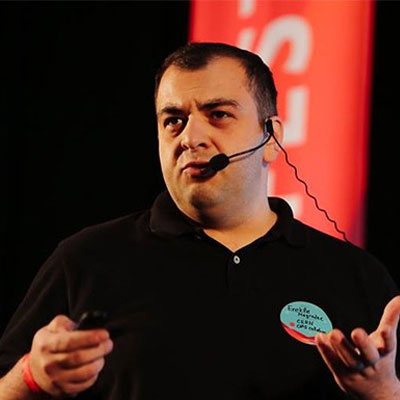

Senior design project, Spring 2026
Metavault
A self-hostable media library for personal records, tracking, search, and recommendations.
Metavault tracks movies, shows, anime, games, books, manga, and other media in one place. The core library works without external services: users can create records, search them, organize them, and export their data. TMDB, AniList, IGDB, OpenLibrary, and AI are opt-in.
Motivation and product scope
Purpose of Metavault
People who track several media types usually split their history across separate tools. Ratings, statuses, tags, unfinished items, and backups end up spread across different accounts.
Metavault keeps that history in one user-owned library. Accounts, records, collections, EZQ, import/export, and the main library flow work without metadata sources or an AI provider.
- Data ownership
- SQLite data and export bundles keep the library portable.
- Shared media model
- Movies, shows, anime, games, books, and manga use one record shape.
- Easy enrichment
- Configured source APIs fill metadata when the user asks.
- Portable setup
- Docker and the open repository make the project easier to run and reuse.
Main flows available in the MVP
Features of Metavault
Account creation and management, library management, EZQ commands, entry enrichment, assistant chat, recommendations, and import/export are all included.
System design and query model
Architecture and EZQ
The client handles screens and quick feedback. The server handles auth, user-scoped actions, imports, enrichment, recommendations, and SQLite writes.
Web interface for library workflows.
TypeScript server for app actions.
Persistent records and source metadata.
Easy query languages written by us in Rust, used for generating instructions for the server to execute.
Users can configure providers to use as metadata providers. They can be used with the #enrich command.
Users can configure which AI model to use. We support OpenAI-compatible models, even locally hosted.
EZQ (Easy Query)
Short commands cover common library actions. The server parses the same query again before running it for the signed-in user.
/s status:in_progress type:movie
/c Dune type:book status:planning
/u Joker > status:Finished
/d public_rating:<7
Integrations, evidence, and next steps
Enrichment and recommendations
Source integrations enrich saved entries and build the catalogue. The server filters and scores candidates before the assistant explains the ranked results.
- Source APIsfetch records
- Normalize fieldsmap provider data
- Catalogue storestore candidates
- Score candidatesfilter and rank
- Assistant answerexplain items
Recommendation study outcomes
Five participants evaluated 25 prompts. Each prompt returned five recommendations, for 125 recorded ratings.
Useful items76%
target 60%
0%50%100%
Lists with quality match92%
target 80%
0%50%100%
Average score3.37 / 5.00
target 3.0
1.03.05.0
Useful means a rating of at least 3. Quality match means a rating of at least 4.
Future Improvements
Where the project goes next
The current version implements the core library, enrichment, and recommendation flow. Future work will focus on recommendation quality, usability improvements, and query improvements.
Recommendation quality Tune scoring weights, handle negative constraints, and broaden the catalogue.
Usability improvements Add release tracking, browser extensions, and a simpler way to query libraries.
Query improvements Improve EZQ docs and cross-media tag handling for movies, anime, games, books, manga, and shows.
Team
Built at Ilia State University.
The project was developed by the student team with supervision from Ilia State University faculty.

Supervisor
Prof. Dr. Erekle Magradze
Guided the project scope, technical direction, and final review.

Student
Nikoloz Kvrivishvili
Worked on the application architecture, backend services, and core library workflows.

Student
Giorgi Ratiani
Worked on source integrations, testing, and recommendation study support.

Student
Guga Akopashvili
Worked on interface flows, user experience details, and presentation materials.
Links
Project access
Scan a code or open the deployed app and repository directly.